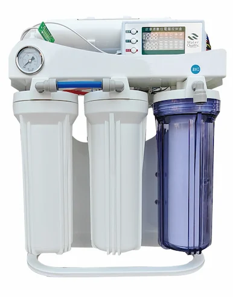

RO sistemi za prečišćavanje vode · 10 · RO · 400G · 800G
Prije ponude potvrdite priključak, dimenzije i zahtjeve projekta.
KontaktPrije ponude potvrdite priključak, dimenzije i zahtjeve projekta.

Prije ponude potvrdite priključak, dimenzije i zahtjeve projekta.
KontaktSpecifikacije mogu varirati u zavisnosti od izabrane konfiguracije. Potvrdite konačne zahtjeve prije ponude.
| Product Type | 10-Inch Frame RO Water Machine 400G-800G |
|---|---|
| Operating Mode | Full automatic intelligent operation with microcomputer control |
| Treatment Process | 10-inch PP + 10-inch UDF + 10-inch PP + 3012 RO + T33 post carbon |
| Pure Water Flow | 400G-800G |
| Feed Water | Municipal tap water |
| Feed pressure | 0.1-0.4 MPa |
| Project customization | Project layout and controls can be adjusted after water-source review |
| Application | Commercial drinking-water and water-treatment projects |
| OEM/ODM | Configuration is confirmed by project specification |
| MOQ | Confirmed by capacity, configuration and OEM level |